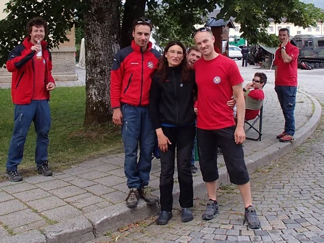

Plava jakna
Ulazim u helikopter i za tren-dva smo na ulazu u Riesending-Schachthohle, najdublju jamu bavarskih Alpa. Taj isti dan sam "trebao" biti na faksu i konačno pisati taj ispit za koji sam se pripremao skoro dva mjeseca.…

Marko Rakovac
Ulazim u helikopter i za tren-dva smo na ulazu u Riesending-Schachthohle, najdublju jamu bavarskih Alpa. Taj isti dan sam "trebao" biti na faksu i konačno pisati taj ispit za koji sam se pripremao skoro dva mjeseca. Prihvatio sam činjenicu da ću opet upisivati treću godinu na faksu. Poziv u speleospašavateljsku akciju, kao i uvijek, stigne nenadano. Jesam li tad lakomisleno otišao u akciju? Jesam li rekao svojim roditeljima kuda sam se uputio? "Nisam", odgovor je na oba pitanja. Nije neka frka letjeti za viši cilj kojeg sa tobom suosjećaju samo rijetki, oni isti čudaci. Možda je tako i bolje, složit će se neki.U digresiji se unutarnji dijalog nastavlja: "Svaka ti čast! Stvarno puno žrtvuješ za klub, za speleologiju, za druge. Kako uspijevaš?" - izložen si. "Što je tebi tu čudno? Da nisi ti taj koji žrtvuje svoje vrijeme nauštrb samog sebe. Ponekad mislim da si rob materijalnog svijeta gdje sve što se ne tiče tvojih osobnih interesa svodiš na minimum. Tko je komu gospodar?" - posredno molim za malo intelektualnog napora.
"Kako to misliš?" - ljuti se. "Neke stvari nisu započele niti će završiti sa tobom u ovom univerzumu." "Ti si skrenuo!" - promatra me krajičkom oka i misli da sve o meni zna. "Oprosti, nisam htio biti grub." - popuštam i odustajem od diskusije kako ne bi prerasla u nepotrebnu razmiricu.
Nakon 30 sati akcije ulazim u bivak "0", malo zaravnjeno mjesto u tisućmetarskoj jami. U tom bivku na 300 m dubine su zgruvana nosila s unesrećenim i desetak spašavatelja koji pokušavaju spavati jedan na drugome. Pokraj nosila stoji liječnica Mancinelli i ne miče pogled sa unesrećenog. Svi su previše izbijeni i konačno na "ravnom" da bi uopće spoznali ovaj trenutak. Pokušavam drugarima koji su uspješno i vrhunski odradili nekoliko teških spašavalačkih dionica objasniti da naprave mjesta za odmor liječnici koja brine o unesrećenom. Nisu me kavaljeri čuli od silnog zveketa oružja u jami. Mancinelli mi govori da ne vodim brigu i da ostavim dečke na miru.
Prilazim i pitam je gdje joj je pernata jakna, njen "piumino"? "Ostao mi je negdje niže u jami, trasport je krenuo a jakna je u žaru izvlačenja zaboravljena" - odgovara.
Prolazi trenutak šutnje te odlučno joj nudim svoju plavu jaknu. Ona nevjerice odbija ali je zato oči izdaju. "Inzistiram!" - još jednom otkrivam onu temeljnu istinu univerzuma, davanje.
Ne zadržavam joj više pažnju i izlazim iz bivka. Spremam se izaći iz jame i više nikad vidjeti doktoricu Mancinelli ili tu plavu jaknu. Fućka mi se za pernatu jaknu i eventualnu činjenicu što ću se malo pothladiti. Priča se nastavlja sa uspješnom akcijom spašavanja.
Nakon godinu dana, stiže u inbox tužna vijest. Mancinelli i drugi sudionici ekspedicije, stradali su u lavini u Nepalu koju je aktivirao potres. Cijela dolina Langtang i svi stanovnici sela nestali su u trenu. Nevjerica. Zar samo tako?! Veliki upitnik nad mojom glavom i stid. Stid što sam na tren pomislio da ne skinem tu plavu jaknu sa sebe. Srećom, prigrlio sam nepoznato i poput odvažne liječnice otplovio u neizvjesnost razotkrivajući privid vremena. Grazie Gigliola.
Podsjetimo se: HGSS